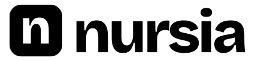
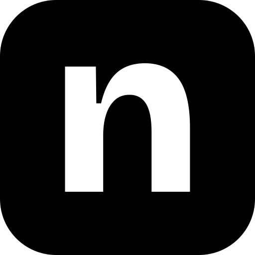

Foundations · 02
Logo
The word set in Bricolage Grotesque ExtraBold at −0.045em, in one colour, next to a rounded tile carrying the n. Version 2 removed the full stop. The colour that lived in the dot now fills the tile — and unlike the dot, the tile changes colour with the context it appears in.
Revision
What changed, and why
v1 — retired
nursia.
Two colours, and the whole identity resting on a 12px dot that closed up at small sizes and fought the app icon.
v2 — current
The word in one colour, and one shape holding the colour. The letterforms, weight and tracking are untouched.
Primary
The horizontal lockup
The default, and what belongs in the site header, ads, decks and email. Teal tile, paper n, ink word. The gap between tile and word is about a quarter of the tile's width, and the word is centred on the tile's height.
Everything is generated by scripts/build-logo.mjs with the
letterforms outlined, so no cut depends on the font being installed. The
site's <Logo> component renders the same outlines.
Never re-set the word by typing it in Bricolage.
Every cut, and when it is the right one
nursia-logo.svg — primary
Teal tile, ink word. Any light ground.
nursia-logo-reverse.svg — on ink
The tile is highlighter yellow with an ink n — the primary tile, and the same one the light grounds carry.
nursia-logo-paper-on-dark.svg — neutral on ink
Where a yellow tile would be a second highlighter on the layout — the site footer, for one.
nursia-logo-ink.svg — neutral on light
Invoices, forms, documents: anywhere brand colour would be noise.
nursia-logo-black.svg — one colour

The n is knocked out of the tile, so it prints in a single ink. Faxes, forms, engraving, embroidery. A white cut exists too.
nursia-wordmark.svg — the word alone

Where the brand is already clear: footers, legal lines, a partner's logo row. Reverse, white, black and teal cuts sit alongside.
nursia-stacked.svg — square placements

The lockup over NCLEX PRACTICE QUESTIONS, for directory listings, sponsor walls and print. A reverse cut exists too.
Dynamic colour
The tile changes colour. The word never does.
Eight approved tiles. The four core tiles cover everyday use; the four context tiles each belong to one kind of surface. Every tile carries a fixed n colour, and every pair is 4.5:1 or better.

Teal #0B6B62
Core. Site, app icon, ads, avatar.
Highlight #F5E85C
Core. On ink and on photography.
Ink #14161A
Core. One-colour print, legal, forms.
Paper #FBFAF6
Core. Dark UI chrome.
Results #157F52
Score reports, streaks, milestones.
Night #1E3A5F
Late sessions and reminders.
Plum #5B3A6E
Educators, schools, partners.
Bronze #8A5A1F
Seasonal campaigns and events.
Context tiles in use
One colour per surface, chosen by context and kept there. The word stays ink throughout.
In code
/* The React component */ <Logo /> /* primary */ <Logo tone="paper" tile="paper" /> /* on ink */ <Logo variant="mark" tile="night" /> /* app mark */ /* Or inline nursia-logo-dynamic.svg */ .theme-results .nursia-logo { --nursia-tile: #157F52; --nursia-glyph: #FBFAF6; }
Loaded as a plain <img>, the dynamic file shows its defaults: teal tile, paper n, ink word.
- One tile colour per surface. Never randomise it per page load.
- The word never follows the tile. Ink on light, paper on dark, white on photography.
- The yellow tile is the primary and rides any ground. Teal, ink and context tiles stay on light grounds; paper stays on ink and photos.
- Context colours stay in the tile. They are never buttons, text, backgrounds or chart series.
- Never the wrong-answer red as a tile — it reads as an error. Teal and highlight never touch.
Small sizes
The app mark
The whole word goes illegible below about 120px, so the mark keeps only the n. With no dot sharing the tile, the letter now fills 49% of the tile's width — which is what keeps it readable in a browser tab.
nursia-mark.svg
Rounded tile. Avatars, app icons, favicons.

nursia-mark-square.svg
No corner radius, for platforms that mask their own. Also the maskable manifest icon.

nursia-mark-black.svg
One colour, letter knocked out.
48 · 32 · 16px
Still reads at favicon size. PNGs at 192, 512 and 1024 sit alongside.
Social
The OG card

1200×630 on the ink ground with the yellow tile. There is no highlighter rule on it any more — the tile is the yellow, and two yellows on one card is one too many. A light cut and a PNG sit next to the SVG.
Rules
Clear space and minimum size
Clear space = the height of the n
On all four sides, measured from the artwork's edge — about 62% of the tile's height.
Minimum size
Word · 90px · 22mm
Mark · 16px · 5mm
Shown actual size. Below the floor, switch cut — do not shrink the word.
Misuse
Never
nursia.
Add the full stop — or any punctuation — back after the word.
Never
Stretch, condense, rotate or arc it.
Never
Add a shadow, glow or outline.
Never
Invent a tile colour, or recolour the word to match the tile.
Never
Put the ink logo on a mid-tone photo. Use the photography cut.
Never
Line several tile colours up as decoration.
Engineering
Wired into the app
src/app/icon.svg, apple-icon.png,
opengraph-image.png, favicon.ico,
manifest.ts and src/components/logo-paths.ts
are all generated or fed from these files. Re-run
node scripts/build-logo.mjs after any change to the mark and
they update together — including this kit's logos/ folder.